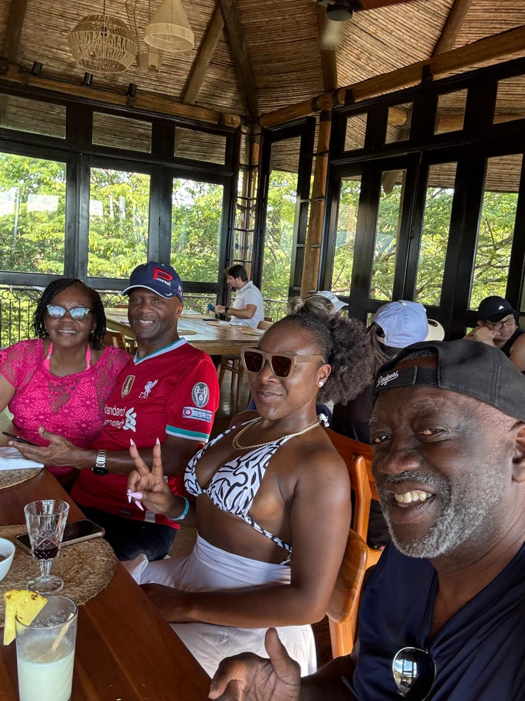

UNIFAM nació gracias a la visión y el compromiso de tres personas emprendedoras:
Herny Edwards Bowen, Aaron Edwards Teodine y John Edwards Wallace. Motivados por la
necesidad de generar un impacto positivo en la familia y promover el bienestar de sus miembros,
decidieron unir esfuerzos para crear una organización basada en los valores de solidaridad, respeto
y trabajo en equipo.
La idea surgió durante varias reuniones en las que los fundadores identificaron la necesidad de contar
con una entidad que apoyara el desarrollo social, cultural y económico de las personas de la familia.
Después de analizar diferentes propuestas y escuchar las necesidades de los futuros asociados,
establecieron
las bases y objetivos de la organización.
Gracias al liderazgo de Herny Edwards Bowen, la capacidad de planificación de Aaron Edwards Teodine y el
espíritu innovador de John Edwards Wallace, la asociación fue consolidándose poco a poco, atrayendo
nuevos
miembros y desarrollando proyectos orientados al beneficio colectivo.
Con el paso de los años, la asociación ha fortalecido su compromiso con la familia, promoviendo
iniciativas
de crecimiento, capacitación y cooperación entre sus integrantes. Actualmente, continúa trabajando con
la misma
visión y misión de sus fundadores: construir oportunidades, fomentar la participación y contribuir al
desarrollo
sostenible de quienes forman parte de esta gran familia.
La administración de UNIFAM está conformada por un equipo de asociados que asumen diferentes cargos de responsabilidad, trabajando de manera coordinada para garantizar el buen funcionamiento y desarrollo de la asociación.